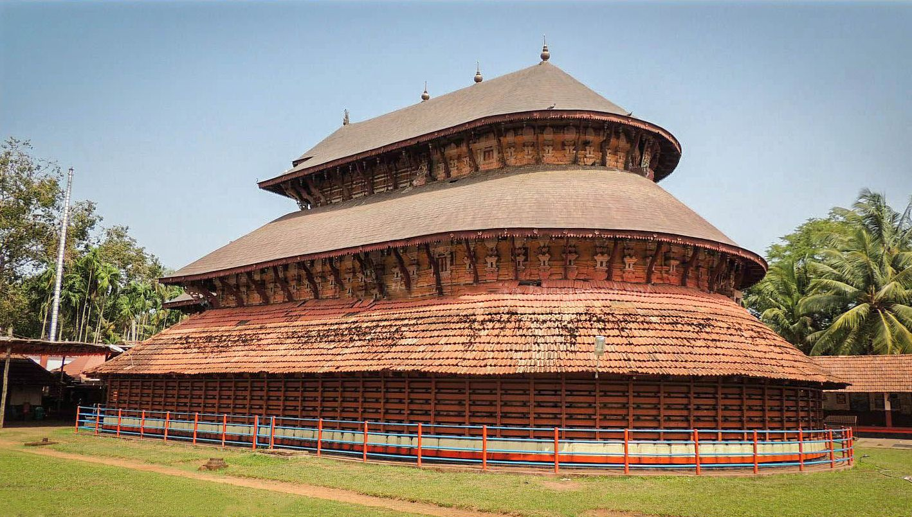
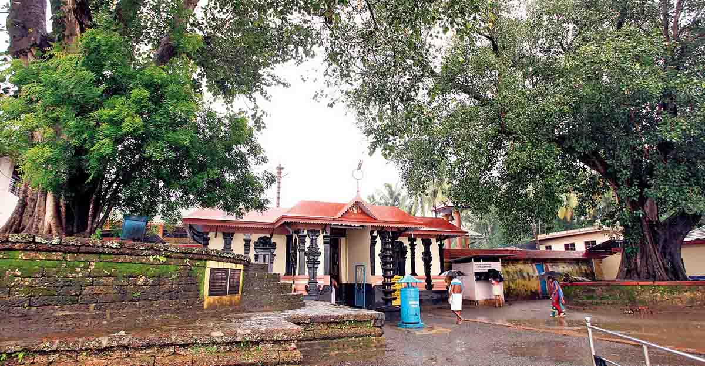

PLACES TO VISIT IN MALAPPURAM
Nilambur

Situated 40 km from Malappur, Nilambur is famous for its teak plantations. Tourists often stop here on their way to Ooty. The oldest teak plantation of the world, the Connolly’s Plot is just 2 Kms from Nilambur town. The town also has Kannimaree, the oldest and tallest teak tree of the world. Nilambur is also home to the world’s first teak museum. The museum has information on all aspects of teak, exhibits, articles and details of the historic, aesthetic and scientific value of teak wood.
Ponnani
It is in Ponnani that the Nila River ends her journey by emptying out into the Arabian Sea. This scenic coastal town is counted as one of the most important fishing centres along the Malappuram Coast. One can go river rafting on the Thootha River on a raft made of wild bamboo fastened with coir ropes. Boating in the Tirur Puzha and Kootai, where you can spot migratory birds is also an enchanting experience.
Tanur Beach
Tanur was one of the oldest Portuguese settlements. St. Francis Xavier visited the place in 1546. Tanur Beach is the small fishing town of Tanur. The nearby attraction is the Keraladeshpuram temple, dedicated to Lord Vishnu. It is the oldest temple of Kerala.
Kadalundi Bird Sanctuary
The Kadalundi Bird Sanctuary is spread over a cluster of islands in a scenic area surrounded by hillocks where the Kadalundi River flows into the Arabian Sea. The place is locally known as Kadalundi Nagaram. This land is the abode of a hundred species of native birds and over 60 varieties of migratory birds that flock here in large numbers during February-March. A hillock nearby, which is 200 m above sea level, offers a splendid view of the river mouth and the sea. Kadalundi is also known for a wide variety of fish, mussels and crabs.
Padinharekara Beach
Padinharekara Beach is close to Ponnani and at the end of the Tipu Sulthan Road. It offers a breath taking view of the confluence of the River Bharathapuzha and Tirurpuzha with the Arabian Sea.
Kadampuzha

Kadampuzha is situated 3 km north of Vettichira on NH-17 connecting Calicut and Trissur. The temple is in Melmuri village of Tirur taluk and is famous for its Bhagavathi temple, said to have been set up by Jagadguru Sankaracharya.
Thirunavaya

This ancient temple on the banks of River Bharathapuzha is dedicated to Lord Shiva. This temple was the venue of the Mamankam festival where people adept in the martial art of Kalaripayattu used to come to fight it out.
Trikandiyur

This ancient Shiva temple with an idol is said to have been installed by Parasurama. It is situated close to the town of Tirur, and attracts devotees from far and wide.
Kottakkal Arya Vaidya Sala
Located 13 km from Malappuram, the small town of Kottakkal is home to Kottakkal Arya Vaidyasala, one of the best institutions of Ayurveda in the country. The institution was founded by Vaidyaratnam P.S. Warrier in 1902. The Vaidyasala runs an Ayurveda research center, a nursing home, a hospital, an Ayurveda college and a medicinal herbal garden.